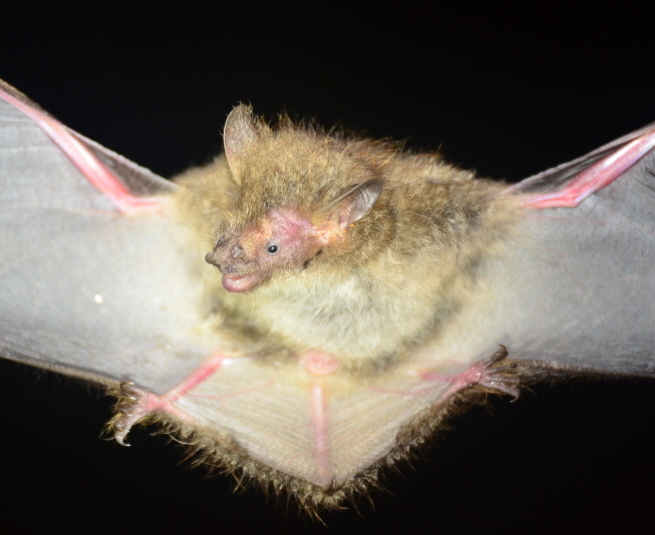

작은관코박쥐

주요특징 및 설명
종명: 작은관코박쥐(ognev's tube-nosed bat)
학명: Murina ussuriensis
생물학적 분류: 애기박쥐과 관코박쥐속
분포: 한국, 중국, 일본, 러시아
등급: 멸종위기종 Ⅱ급
주요 특징
작은관코박쥐는 ‘쇠뿔박쥐’ 또는 ‘우수리관코박쥐’라고도
불린다.
콧구멍이 관모양으로 주둥이 끝에 나와 양쪽으로 열려 있다. 겨울철에는 따뜻한 곳을 찾아 중국 북부에서 일본 남부로
이동한다.